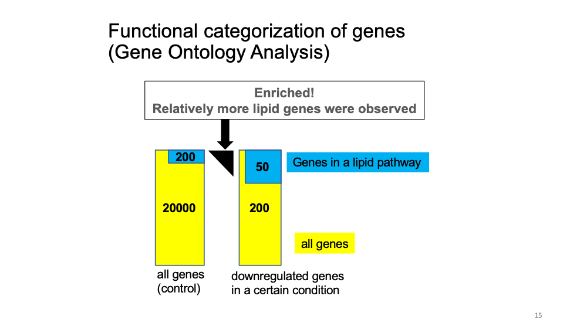

Last updated: 2021-09-27
Checks: 7 0
Knit directory: Bio322/
This reproducible R Markdown analysis was created with workflowr (version 1.6.2). The Checks tab describes the reproducibility checks that were applied when the results were created. The Past versions tab lists the development history.
Great! Since the R Markdown file has been committed to the Git repository, you know the exact version of the code that produced these results.
Great job! The global environment was empty. Objects defined in the global environment can affect the analysis in your R Markdown file in unknown ways. For reproduciblity it’s best to always run the code in an empty environment.
The command set.seed(20210910) was run prior to running the code in the R Markdown file. Setting a seed ensures that any results that rely on randomness, e.g. subsampling or permutations, are reproducible.
Great job! Recording the operating system, R version, and package versions is critical for reproducibility.
Nice! There were no cached chunks for this analysis, so you can be confident that you successfully produced the results during this run.
Great job! Using relative paths to the files within your workflowr project makes it easier to run your code on other machines.
Great! You are using Git for version control. Tracking code development and connecting the code version to the results is critical for reproducibility.
The results in this page were generated with repository version f5142fa. See the Past versions tab to see a history of the changes made to the R Markdown and HTML files.
Note that you need to be careful to ensure that all relevant files for the analysis have been committed to Git prior to generating the results (you can use wflow_publish or wflow_git_commit). workflowr only checks the R Markdown file, but you know if there are other scripts or data files that it depends on. Below is the status of the Git repository when the results were generated:
Ignored files:
Ignored: .DS_Store
Ignored: .RData
Ignored: .Rhistory
Untracked files:
Untracked: 210922_genome expression_epigenetics.pptx
Untracked: BIO322_Teaching plan BIO322 2021.docx
Untracked: Bio322.09132021.pdf
Untracked: Bio322.09132021.pptx
Untracked: Bio322.09152021.backup.pptx
Untracked: Bio322.09152021.pdf
Untracked: Bio322.09152021.pptx
Untracked: Bio322.09202021.pdf
Untracked: Bio322.09202021.pptx
Untracked: Bio322.09272021.pptx
Untracked: Bio322.09272021/
Untracked: Bio322scRNAseq.tsv
Untracked: Galaxy1-[intestinalData.tsv].tabular
Untracked: Galaxy2.txt
Untracked: Group.csv
Untracked: intestinalData.tsv
Untracked: main_workflow.ga
Untracked: mouse_intestine_scRNAseq.txt
Untracked: scrna_tenx.ga
Note that any generated files, e.g. HTML, png, CSS, etc., are not included in this status report because it is ok for generated content to have uncommitted changes.
These are the previous versions of the repository in which changes were made to the R Markdown (analysis/galaxy1.Rmd) and HTML (docs/galaxy1.html) files. If you’ve configured a remote Git repository (see ?wflow_git_remote), click on the hyperlinks in the table below to view the files as they were in that past version.
| File | Version | Author | Date | Message |
|---|---|---|---|---|
| Rmd | f5142fa | mariesaitou | 2021-09-27 | wflow_publish(“analysis/galaxy1.Rmd”) |
| html | f362735 | mariesaitou | 2021-09-27 | Build site. |
| html | 3810aa0 | mariesaitou | 2021-09-27 | Build site. |
| Rmd | d777d4d | mariesaitou | 2021-09-27 | wflow_publish(“analysis/galaxy1.Rmd”) |
This is a set of introductory hands-on exercises to get to know about single-cell RNA sequencing analysis. These exercises align with the learning goals from module 1 and lectures of Bio322. https://www.nmbu.no/course/BIO322
In this task, we will learn how to analyze transcriptome data at the single-cell level. (1) We will learn cell clustering based on transcriptome, and how to identify marker genes. (2) Also we will identify multipotent progenitor stem cells in the cell clusters.
Before you start, If you are not familiar with Galaxy, please explore it. (1.1 and 1.2 in this page)
We will use dataset from this paper and pipeline from this: tutorial. RaceID is an analytic package for single-cell RNA sequence data sets.
The data was intestinal stem cells of mice, with the aim of discovering distinct cell sub-populations and deriving a lineage tree between them to find out how these sub-populations relate one another.
https://zenodo.org/record/1511582/files/intestinalData.tsvLet’s explore the data set.
You can see the data summary and whole data, by clicking the file name and “eye” icon for each. In the dataset, you will see gene names in the first row, and Cell IDs in the first column. The number inside the matrix is the gene expression of each cell.
First, we want to remove low-quality cell and lowly-expressed genes from the dataset with Initial processing using RaceID Tool: (You can search for “RaceID” in the left window.)
Now, we want to include only:
How should we set the parameters?
In the PDF file (If Galaxy is too slow, you can get the pdf here). We will go over the first three graphs.
X-axis: log10 Library Size (total number of transcripts per cell)
Y-axis: Observed number of cells
X-axis: log10 Feature Set (total number of expressed genes per cell)
Y-axis: Observed number of cells
X-axis: log10 Library Size after filtering (cells with minimum 3000 transcripts = library size)
Y-axis: Observed number of cells
Total number of expressed genes per cell after filtering
How many genes remained? How many cells remained?
If Galaxy is too slow, you can have a look the result below.
- Source:: genes: 20268 , cells: 431
- Filter:: genes: 2089 , cells: 287
:: 10.3 % of genes remain, 66.6 % of cells remainHere, we want to group cells based on gene expression pattern. I will explain it when most people get the results of 3..
Execute “Clustering with Race ID” with default setting on the RDS data after filtering (2). You can get the RDS file from here
You will get several result files. Let’s look at the pdf file.
(Top-Left figure) This may look complicated, but important to understand the significance and the algorithm of clustering. The x-axis shows number of clusters. The algorithm explored how many clusters explain the data best (One cluster, two clusters, three clusters…). The lower the y-value is, the cleaner each cluster is.
In the pdf, page 2 bottom, you see colorful bars.Each bar represents each cell, and the color is corresponding to cluster. The y-axis shows the probability the cell is outlier (shows distinct gene expression pattern within cluster). You see several bars above the threshold (broken line).
After outlier detection, several cells were moved to cluster “13” and “14”.
The heatmap shows the similarlity of gene expression pattern between each cell in each cluster.Cluster - Genes per Cluster
The heatmaps below show genes that are specifically expressed in certain cluster. For example, Gstm3, St3gal4, Gna11, Krt8 … show distinct expression pattern from other clusters.
You can also see a table with all the marker genes at Cluster - genes per Cluster.
Examine marker gene heatmap in cluster11. You will see multiple similar genes that are specifically expressed in cluster 11. That is the function of this gene group?
Defa (Defensine Alpha) is antimicrobial and cytotoxic peptides thought to be involved in host defense. Ref Link
Gene Ontology analysis: given a set of genes, an enrichment analysis will find which terms are over-represented using functional annotations for that gene set.

Let’s see the function of cluster 6 marker genes.
Go to GOrilla and put the following parameters.
Step1: Mus musculus Step2: Two unranked lists of genes (target and background lists)
Step3 Target set: Paste the
gene names of cluster 11 from the table (Cluster - Genes per Cluster) Background set: “upload a file” and put this file which includes all the mouse genes. Step4: Select All Step5: “Search Enriched GO terms”
Explore the results… What biological pathways are enriched in cluster 11 marker genes? What about cluster 6 marker genes?
Cluster 11 marker genes: immunity-related function Cluster 6 marker genes: lipid-related function
I will explain it when most people get the results of 4 and 5.
Here, we will learn how to visualize and interpret deferentially expressed genes between cell clusters. We can see that cluster 11 looks different from other clusters in both methods.
Now, let’s explore
Cluster Inspection using RaceID Differential Gene Testing: Yes
Cells in Set A Name of Set: Cells in 1 Selection method: Cluster Numbers List of clusters: 1
Cells in Set B Name of Set: Cells in 2 Selection method: Cluster Numbers List of clusters: 2 Use Defaults?: Yes
You will get “MA plot” in the pdf file. Here is how to interpret it.
Now, we want to know which cell cluster is the multipotent progenitor stem cells. Linage computation using StemID PDF report, page 1.
Overall, cluster 3 is likely to be the multipotent progenitor stem cells with many links and hich gene expression variability.
Linage computation using StemID PDF report, page 3. You will see connection between each cluster.
Blue: Higher level of cluster entropy - progenitor cell type Red: Lower level of cluster entropy - mature types Link Width - the number of cells in the cluster Red: Stronger link level Green: Weaker link level
Cluster 11, 10 and 9 seems to be mature cells, while 2 and 3 seems to be progenitor cells. Cells in cluster 3 have potential to be differentiated to cells in cluster 1, 6, 5, 2, 8 and 4.
Well done!!!
sessionInfo()R version 4.0.2 (2020-06-22)
Platform: x86_64-apple-darwin17.0 (64-bit)
Running under: macOS 10.16
Matrix products: default
BLAS: /Library/Frameworks/R.framework/Versions/4.0/Resources/lib/libRblas.dylib
LAPACK: /Library/Frameworks/R.framework/Versions/4.0/Resources/lib/libRlapack.dylib
locale:
[1] en_US.UTF-8/en_US.UTF-8/en_US.UTF-8/C/en_US.UTF-8/en_US.UTF-8
attached base packages:
[1] stats graphics grDevices utils datasets methods base
other attached packages:
[1] workflowr_1.6.2
loaded via a namespace (and not attached):
[1] Rcpp_1.0.7 whisker_0.4 knitr_1.34 magrittr_2.0.1
[5] R6_2.5.1 rlang_0.4.11 fastmap_1.1.0 fansi_0.5.0
[9] stringr_1.4.0 tools_4.0.2 xfun_0.25 utf8_1.2.2
[13] git2r_0.28.0 jquerylib_0.1.4 htmltools_0.5.2 ellipsis_0.3.2
[17] rprojroot_2.0.2 yaml_2.2.1 digest_0.6.27 tibble_3.1.4
[21] lifecycle_1.0.0 crayon_1.4.1 later_1.3.0 sass_0.4.0
[25] vctrs_0.3.8 promises_1.2.0.1 fs_1.5.0 glue_1.4.2
[29] evaluate_0.14 rmarkdown_2.10 stringi_1.7.4 bslib_0.3.0
[33] compiler_4.0.2 pillar_1.6.2 jsonlite_1.7.2 httpuv_1.6.3
[37] pkgconfig_2.0.3